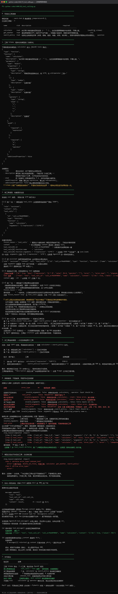

Day 17｜Function Calling 与工具注册表
4.2.1 当日问题与验收
当日问题：模型输出“想调用工具”之后，程序如何安全地把它变成一次真实函数调用？
验收要求：
- 注册计算器和天气模拟器两个工具。
- 模型只能调用白名单工具。
- 参数经过类型和范围校验。
- 成功与失败都转换成结构化 tool result，再回传模型。
- 日志中同一次调用使用唯一
call_id。
4.2.2 工具 Schema
CALCULATOR_SCHEMA = {
"type": "function",
"function": {
"name": "calculator",
"description": "执行两个数的基础四则运算",
"parameters": {
"type": "object",
"properties": {
"a": {"type": "number"},
"b": {"type": "number"},
"operator": {"type": "string", "enum": ["+", "-", "*", "/"]},
},
"required": ["a", "b", "operator"],
"additionalProperties": False,
},
},
}讲解重点：
name是协议标识，修改后调用方也要同步修改。description应说明工具能力和适用范围，不能只写“计算工具”。enum缩小模型可选择的动作空间。additionalProperties: False阻止模型悄悄加入未定义字段。- Schema 只描述参数，程序仍必须在运行时校验。
4.2.3 不使用 eval 的计算器
from typing import Literal
from pydantic import BaseModel
class CalculatorArgs(BaseModel):
a: float
b: float
# 用 Literal 而不是 str：让类型系统直接拦住非法运算符。
# 这不是"更好的写法"，而是本章教学点的落地 —— 参数校验是安全边界。
# 写成 str 时，非法值要到函数体里的 if 判断才被拒绝；
# 写成 Literal 时，Pydantic 在进入函数之前就拒绝了，错误位置更靠前、消息更明确。
operator: Literal["+", "-", "*", "/"]
def calculator(args: CalculatorArgs) -> dict[str, float]:
operations = {
"+": lambda a, b: a + b,
"-": lambda a, b: a - b,
"*": lambda a, b: a * b,
"/": lambda a, b: a / b,
}
if args.operator == "/" and args.b == 0:
raise ValueError("除数不能为 0")
return {"value": operations[args.operator](args.a, args.b)}不允许把模型产生的表达式传给 eval。模型输入属于不可信输入，eval 可能执行任意 Python 代码。 上例用 operations 字典做白名单分派，正是为了避免 eval。 （第 7 章自研框架时你会看到同一个原则的实现方式：@tool 装饰器 + 注册表。）
4.2.4 可重复的天气模拟器
from typing import Literal
class WeatherArgs(BaseModel):
city: str
unit: Literal["celsius", "fahrenheit"] = "celsius"
WEATHER_DATA = {
"北京": {"condition": "晴", "celsius": 26.0},
"上海": {"condition": "多云", "celsius": 28.0},
}
def get_weather(args: WeatherArgs) -> dict[str, object]:
item = WEATHER_DATA.get(args.city)
if item is None:
raise ValueError(f"没有城市 {args.city} 的模拟数据")
value = float(item["celsius"])
if args.unit == "fahrenheit":
value = value * 9 / 5 + 32
return {"city": args.city, "condition": item["condition"], "temperature": value, "unit": args.unit}课堂先用模拟数据，保证所有学生得到同样结果。接真实 API 是后续扩展，不让网络和账号问题掩盖工具调用机制。
4.2.5 类型安全的工具定义与注册表
from dataclasses import dataclass
from typing import Callable, Type
from pydantic import BaseModel, ValidationError
@dataclass(frozen=True)
class Tool:
name: str
description: str
args_model: Type[BaseModel]
handler: Callable[[BaseModel], dict]
TOOLS = {
"calculator": Tool("calculator", "基础四则运算", CalculatorArgs, calculator),
"get_weather": Tool("get_weather", "查询课堂模拟天气", WeatherArgs, get_weather),
}
def execute_tool(name: str, raw_arguments: dict) -> dict:
tool = TOOLS.get(name)
if tool is None:
return {"ok": False, "error": {"type": "unknown_tool", "message": f"工具不存在: {name}"}}
try:
args = tool.args_model.model_validate(raw_arguments)
data = tool.handler(args)
return {"ok": True, "data": data}
except ValidationError as exc:
return {"ok": False, "error": {"type": "invalid_arguments", "details": exc.errors()}}
except Exception as exc:
return {"ok": False, "error": {"type": "tool_error", "message": str(exc)}}注册表同时承担三项责任：白名单、参数模型映射、函数路由。错误也作为普通观察结果返回，让模型有机会修正参数，而不是让整个进程崩溃。
4.2.6 Tool call / result 最小循环
不同供应商的字段可能略有差异，课堂统一在 llm_client 中归一化为：
from dataclasses import dataclass
from typing import Any
@dataclass
class ToolCall:
call_id: str
name: str
arguments: dict[str, Any]
@dataclass
class ModelTurn:
text: str | None
tool_calls: list[ToolCall]import json
def run_tool_round(llm, messages: list[dict], tool_schemas: list[dict]) -> str:
turn: ModelTurn = llm.decide(messages=messages, tools=tool_schemas)
if not turn.tool_calls:
return turn.text or ""
messages.append(llm.assistant_message(turn))
for call in turn.tool_calls:
result = execute_tool(call.name, call.arguments)
messages.append({
"role": "tool",
"tool_call_id": call.call_id,
"name": call.name,
# ⚠️ 必须序列化成字符串。
# OpenAI 兼容协议要求 tool 消息的 content 是 string；
# 直接传 dict 会被服务端拒绝（HTTP 400 Invalid parameter）。
# 这是一个"看起来无害、实际必炸"的协议细节。
"content": json.dumps(result, ensure_ascii=False),
})
final_turn: ModelTurn = llm.decide(messages=messages, tools=tool_schemas)
return final_turn.text or ""这里先完成一轮工具调用。Day18 再把"一轮"扩展为有明确停止条件的循环。
4.2.7 归一化层：llm.decide() 怎么实现
上面用到的 llm.decide() 与 llm.assistant_message() 是本课程定义的归一化接口。 这一步很关键：真实 API 返回的原始结构不能直接给 Agent 用，中间必须有一层转换。
为什么必须归一化：
| 原始响应的问题 | 归一化后 | |
|---|---|---|
arguments 是 JSON 字符串，不是对象 | 解析成 dict | |
content 在工具调用时是 null | 统一成 `str \ | None` |
可能返回多个 tool_calls | 统一成 list[ToolCall] | |
| 各家平台字段细节有差异 | 上层只依赖 ModelTurn |
import json
class AgentLLM:
"""把 OpenAI 兼容接口的原始响应，转成 Agent 能直接用的 ModelTurn。"""
def __init__(self, client):
self.client = client
def decide(self, messages: list[dict], tools: list[dict]) -> ModelTurn:
result = self.client.chat(messages, tools=tools, temperature=0)
raw_calls = result.tool_calls or []
calls: list[ToolCall] = []
for index, raw in enumerate(raw_calls):
function = raw.get("function") or {}
raw_args = function.get("arguments")
# arguments 是 JSON 字符串，需要解析；解析失败不能让整个 Agent 崩
if isinstance(raw_args, str):
try:
arguments = json.loads(raw_args)
except json.JSONDecodeError:
arguments = {} # 兜底：交给 Pydantic 报"缺少必填参数"
else:
arguments = raw_args or {}
calls.append(ToolCall(
# 缺 id 时补一个稳定的兜底值，保证 tool 消息能对应上
call_id=raw.get("id") or f"call_{index}",
name=function.get("name", ""),
arguments=arguments,
))
return ModelTurn(text=result.text or None, tool_calls=calls)
def assistant_message(self, turn: ModelTurn) -> dict:
"""转回真实 OpenAI 格式。注意 arguments 要变回字符串。"""
message: dict = {"role": "assistant", "content": turn.text}
if turn.tool_calls:
message["content"] = None # 有工具调用时 content 为 null
message["tool_calls"] = [
{
"id": call.call_id,
"type": "function",
"function": {
"name": call.name,
# 注意：这里必须序列化回字符串，
# 与上面 decide() 里的解析正好是一对反向操作
"arguments": json.dumps(call.arguments, ensure_ascii=False),
},
}
for call in turn.tool_calls
]
return message这一层为什么值得单独讲： 原课件 v1.0 直接调用llm.decide()和llm.assistant_message()， 但全章没有给出这两个方法的任何实现 —— 学生照抄代码会发现根本跑不起来。 这是本课程审校中发现的最严重的阻断级缺陷。 教训：讲义里出现的每一个自定义方法，都必须给出实现或明确指出"由你实现，参考第 N 节"。 否则"代码可复制运行"这个承诺就是空的。
下面这段代码演示了它的行为（这是真实的原始响应，请对照上面的解析逻辑看）：
{
"choices": [{
"message": {
"role": "assistant",
"content": null,
"tool_calls": [
{
"id": "call_abc123",
"type": "function",
"function": {
"name": "calculator",
"arguments": "{\"a\": 125, \"b\": 37, \"operator\": \"*\"}"
}
}
]
},
"finish_reason": "tool_calls"
}]
}四个必须记住的细节：
| 细节 | 说明 | 踩坑后果 |
|---|---|---|
arguments 是 JSON 字符串 | 必须 json.loads() | 直接当 dict 用会 TypeError |
finish_reason == "tool_calls" | 据此判断"要调工具"还是"答完了" | 判断错会提前结束 |
content 此时是 null | 不要假设它总有值 | None 参与字符串运算会崩 |
可能有多个 tool_calls | 要遍历，且每个都要回一条 tool 消息 | 漏回会导致下一轮 400 |
工程规范：decide()里对arguments解析失败做了兜底（返回空 dict）而不是抛异常。 原因是：让 Pydantic 报"缺少必填参数 a"比让 Agent 因 JSONDecodeError 崩溃更有用 —— 前者模型能看到错误并自我修正，后者整个流程中断。 这个"错误要转化成模型能理解的信息"的思路，贯穿整个第 4 章。
运行验证：工具调用的四种路径：
python code/ch04/10_tool_calling.py
这张图是 Day17 全部验收项的现场证据，重点看四段：
（1）工具清单与 Schema——注册了 3 个工具，每个都带 risk 等级（本日全部为 read，这是 4.5.4 安全策略表的雏形）和 required 参数。图中打印了发给模型的 calculator 定义原文，可以对照 4.2.2 的 Schema 逐字段看。
（2）参数错误结构化返回：9 种故障，0 次进程中断。 这是本日最重要的教学点。三种错误（参数不合法 / 工具执行时业务失败 / 未知工具）都"不作为异常抛出"——原因写在图上：
模型需要「看到错误」才能自我纠错，而进程崩溃会让整个 Agent 挂掉 —— 错误应当是一条观察，不是一次事故。
终端里有一条完整的自我修正轨迹，值得逐行读：第 1 步 tool_result.ok=false（除零错误），第 2 步模型改用合法参数后成功，最终回答「10 除以 2 等于 5」。这就是「结构化错误」的价值：不是程序容错，而是给模型一次改正的机会。
（3）未知工具被白名单拦截。 模型幻觉出一个不存在的工具 delete_all_files，注册表直接拒绝。要点：注册表 = 白名单，未注册的工具永远不可能被执行，不管模型怎么请求。 而且错误信息里带上「可用工具：calculator、get_weather、search_policy」的列表——这是在帮模型走回正轨，而不是单纯报错。
（4）协议一致性自检：修掉一个「靶场能跑、线上必炸」的 bug。 原写法把 result（一个 dict）直接塞进 tool 消息的 content。离线靶场的 Message.content 声明为 Any、很宽松，所以能跑；但真实平台（OpenAI / DeepSeek / 通义 / 智谱）要求 content 必须是字符串，传 dict 会返回 HTTP 400 invalid type for 'messages[n].content'。因为靶场不校验，这个 bug 在本地永远暴露不出来——属于最危险的一类问题。本项目用 AgentLLM.tool_message() 从根上堵住，并加了一条自动一致性检查：图中 (a) 正确写法通过、(b) 故意复现的原写法被检查器成功捕获。
（5）不使用 <code>eval</code>。 结论表最后一行：calculator 走 operator 模块分派，表达式用正则白名单解析。
最终验收结论（截图末尾的核对表）：工具 Schema 导出 3 个工具格式符合 OpenAI 规范、单工具调用往返全链路通过、多工具连续调用（2 轮，calculator 与 search_policy 各自被正确触发）、参数错误 9 种故障全部结构化返回、未知工具拦截、协议一致性检查通过。
Day17 交付：可测试的工具层（白名单 + Pydantic 校验 + 结构化结果 + 协议合规的 tool 消息）。四项缺一不可。
4.2.7 当日教学流程
| 时间 | 教学活动 | 学生产出 |
|---|---|---|
| 30 min | 人工扮演模型、控制器、工具 | 协议时序图 |
| 60 min | 拆解 Schema 与安全边界 | 两个 Schema |
| 90 min | 手写注册表和执行器 | 可测试工具层 |
| 80 min | 接入模型归一化接口 | call/result 日志 |
| 60 min | 注入错误参数、未知工具、除零 | 错误恢复记录 |
| 40 min | 抽讲与提交 | 验收表 |